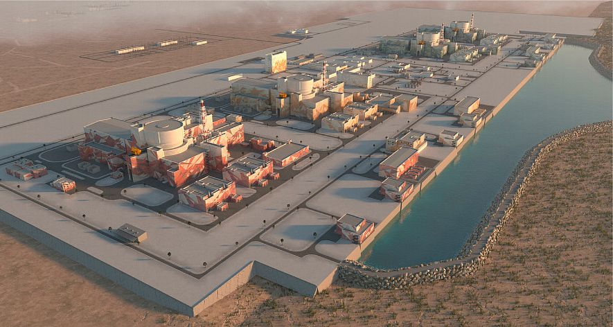

7 апреля состоялся первый в истории проекта строительства АЭС «Эль-Дабаа» марафонский старт.

Строительство АЭССтроящиеся АЭС за рубежом
АЭС «Эль Дабаа» (Египет)
АЭС «Куданкулам» (Индия)
АЭС "Пакш-2" (Венгрия)
АЭС «Руппур» (Бангладеш)
АЭС «Тяньвань» (Китай)
АЭС «Аккую» (Турция)
АЭС «Сюйдапу» (Китай)
Акционерное общество «Научно-исследовательский и конструкторский институт монтажной технологии — Атомстрой» (сокращённоe наименование АО «НИКИМТ-Атомстрой») — инжиниринговая, проектная и научно-производственная компания. Входит в контур управления Атомстройэкспорт (Москва) — инжинирингового дивизиона госкорпорации «Росатом».